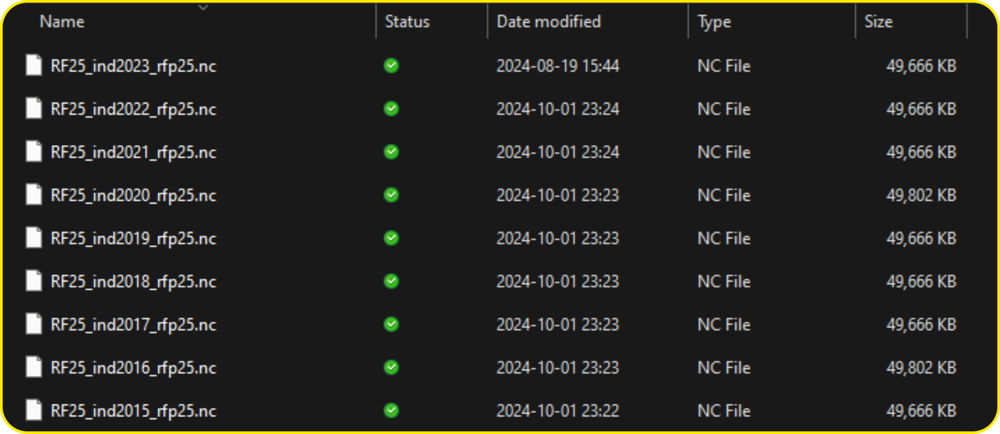

Imd provides the climatic data (daily precipitation and timeperature data).
The data is provided in the .nc or netCDF format. It might be little difficult to understand with new uses. I am presenting the tutorial to work with basic netcdf file in R.

Loading ncdf4 library to process netcdf file. Geospatial analysis is perform by terra package.
if (!require(ncdf4)) { install.packages('ncdf4'); library(ncdf4)}
if (!require(terra)) { install.packages('terra'); library(terra)}
if (!require(tidyverse)) { install.packages('tidyverse'); library(tidyverse)}Read shapefile with multiple polygons in it.
shp <- vect("./Shapefile/Krishna_subbasins.shp")
shp <- project(x = shp, y = "+proj=longlat +datum=WGS84 +no_defs")
plot(shp, bg = "gray")
sbar(d = 1000, type = "bar", divs = 4, below = "km") # Scale
north() # for north arrow.rotate_clockwise <- function(x) {t(apply(x, 2, rev))}
rotate_counter_clockwise <- function(x) {apply(t(x),2, rev)}yr <- 2015:2023
rainfall_mat <- timestamp <- c()
for (yr_i in yr) {
nc_file <- nc_open(paste0("./RF25_ind",yr_i,"_rfp25.nc"))
# print(nc_file) # get info about the file
names(nc_file$var) # Variable i.e. Rainfall
names(nc_file$dim) # Dimenstions (Lat, Lon, time)
latitude <- nc_file$dim[[1]]$vals
longitude <- nc_file$dim[[2]]$vals
time <- nc_file$dim[[3]]$vals
time_as_date <- as.Date(time, origin = "1900-12-31")
rainfall <- ncvar_get(nc_file, varid = "RAINFALL")
r_mat <- matrix(NA, nrow = length(time), ncol = length(shp$OBJECTID))
for(d_i in seq_along(time)){
precip_day <- rainfall[, , d_i] %>% rotate_counter_clockwise() %>% rast()
ext(precip_day) <- c(min(latitude), max(latitude), min(longitude), max(longitude))
crs(precip_day) <- "+proj=longlat +datum=WGS84 +no_defs"
r_day <- terra::extract(x = precip_day, y = shp, fun = mean)
r_mat[d_i, ] <- r_day$lyr.1
print(paste(d_i, yr_i))
}
rainfall_mat <- rbind(rainfall_mat, r_mat)
timestamp <- append(timestamp, time_as_date)
}rainfall_df <- as.data.frame(rainfall_mat)
rainfall_df <- cbind(timestamp, rainfall_df)
write_csv(rainfall_df, file = "Rainfall.csv")Text:
NetCDF (Network Common Data Form) is a widely-used data format designed for storing and sharing scientific data in a structured, self-describing, and platform-independent manner. Developed by Unidata, NetCDF is primarily used in geosciences, such as atmospheric science, hydrology, oceanography, and climate modeling, but can be applied to various other fields requiring efficient storage of multidimensional data.
NetCDF files follow a simple yet powerful structure, consisting of three main components:
temp), with dimensions time, latitude, and longitude.-9999.Let’s say we are working with a NetCDF file containing rainfall data over a geographic area. Here’s a hypothetical structure for such a file:
File ./RF25_ind2023_rfp25.nc (NC_FORMAT_CLASSIC):
1 variables (excluding dimension variables):
double RAINFALL[LONGITUDE,LATITUDE,TIME]
missing_value: -999
_FillValue: -999
long_name: Rainfall
units: mm
history: From ind2023_rfp25.grd
2 dimensions:
LONGITUDE Size:135
units: degrees_east
point_spacing: even
axis: X
modulo: 360
standard_name: longitude
LATITUDE Size:129
units: degrees_north
point_spacing: even
axis: Y
standard_name: latitude
TIME Size:365 *** is unlimited ***
units: days since 1900-12-31
axis: T
calendar: GREGORIAN
time_origin: 31-DEC-1900
standard_name: time
3 global attributes:
history: FERRET V7.5 (optimized) 6-Feb-24
Conventions: CF-1.6time: Unlimited, indicating that more time steps can be added without rewriting the file.latitude: 180 values, representing geographic locations from the southern to the northern hemisphere.longitude: 360 values, representing locations from west to east around the globe.rainfall: A 3D variable that depends on time, latitude, and longitude. It stores daily rainfall values and includes metadata (units = mm, long_name = Daily Rainfall) to describe the data.latitude and longitude: 1D variables with values representing geographic coordinates in degrees.time: A 1D variable containing time values since a reference date (2000-01-01). The calendar attribute specifies the type of calendar system.